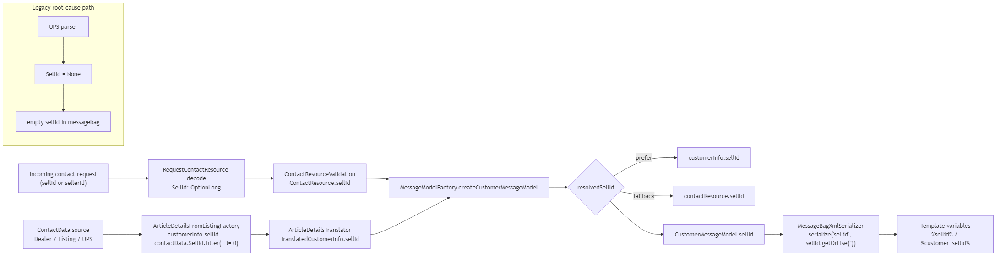
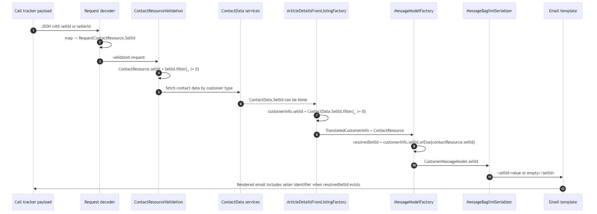

This page summarizes the confirmed root cause, proposed/implemented fix, and current verification status.
Generated on: 2026-02-27 01:37:40 +01:00
listing-contact/app/contactdata/UpsResponseParser.scala:29 sets SellId = None for UPS/private path.listing-contact/app/models/ArticleDetailsFromListingFactory.scala:44 drops 0 via SellId.filter(_ != 0).listing-contact/app/serialization/MessageBagXmlSerializer.scala:90 serializes missing value as empty <sellid/>.ContactResource decoder for both keys: sellId and sellerId.ContactResource (excluding 0).MessageModelFactory, resolve seller id with fallback:customerInfo.sellId.orElse(contactResource.sellId).Behavior preserved: existing customer-info sellId remains preferred when present.


sbt compile with Corretto 21: PASS.sbt "runMain tools.SellIdFixSmokeTest": PASS.
sellId -> RequestContactResource.SellIdsellerId alias -> RequestContactResource.SellIdsbt "testOnly ..." currently fails on pre-existing unrelated test-suite Java 21 deprecation errors (new Locale(...) in many legacy tests).184239733463 and 717037947466).All local templates in this repository currently contain sellerId in the relevant <lead><vehicle> blocks:
templates/gwp/fr-BE/contactForDealer.xml (2 occurrences)templates/gwp/fr-BE/ContactForDealerResponsive.xml (1 occurrence)templates/gwp/nl-BE/contactForDealer.xml (2 occurrences)templates/gwp/nl-BE/ContactForDealerResponsive.xml (1 occurrence)Current confidence is high for the fix path itself (compile + direct smoke checks pass), but not yet full-regression certainty due unrelated repository test-suite blockers.
For production-level certainty, next validation is a read-only offline run on real AWS flows with fixed code deployed to a non-destructive test path.
{kind=link}
{kind=link}